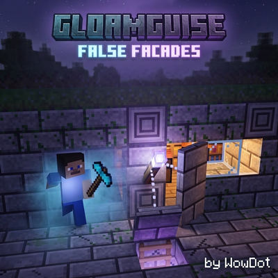
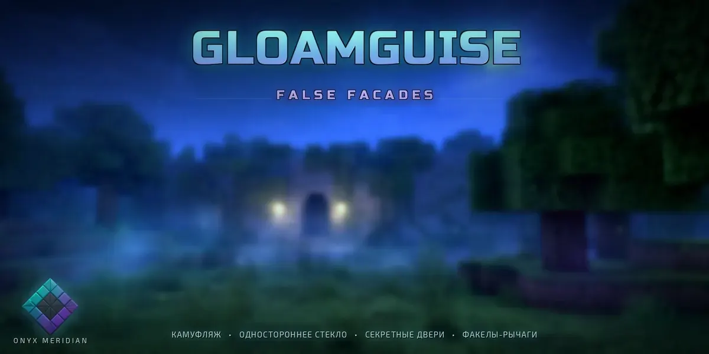
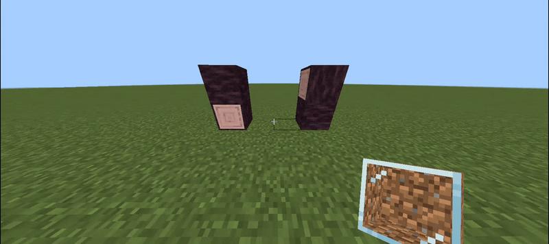
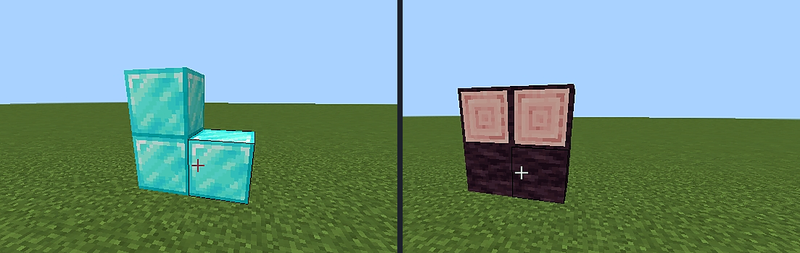
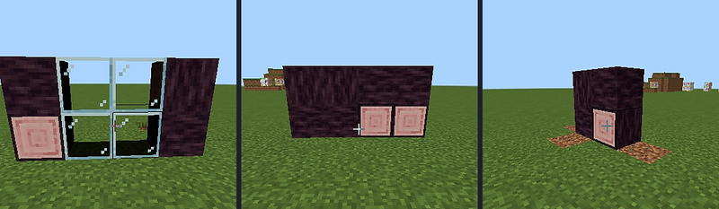
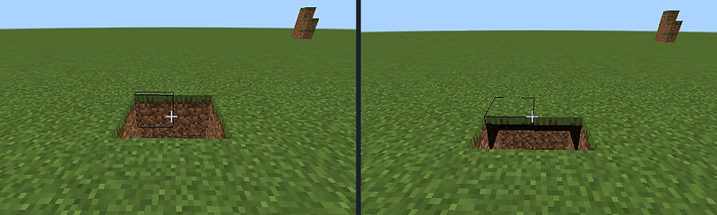

- Many bug fixes — a long list of reported issues is being closed out.
- Reworked logic — parts of the internal logic are being rebuilt.
- More vanilla glass blocks — clear, tinted and stained colours.
- Bigger registry — the camouflage block registry grows well beyond 290+.
The pages below cover the current release, v2.1.5. Follow the project on CurseForge to be notified when the update lands.

Five-channel camouflage
A decoy copies texture faces, log axis, biome tint, block sounds and real light level — not just a flat picture.
One-way spy hole
Solid from the corridor, clear from inside, and it animates in your hand when you toggle the mode.
Engineering honesty
Works in Creative and Survival, breaks with the right tool, respects the single-drop rule, leaves no orphaned halves.
Wireless by design
Remote torches output zero redstone and open linked doors through walls, from any distance.
290+ blocks, 411 states
A deep registry with axis, faces, biome tint, sound and light — and it keeps growing.
Server-ready
Host installs the pack, clients get everything automatically. No experiments, no telemetry.



What is inside
Every item is documented in the wiki — mechanics, gestures, recipes and limits.
Decoy Block
gg:super_block⧉A pass-through ghost wall. Copies five properties of the block you tap.
Decoy Spy Glass
gg:super_glass⧉One-way window: solid outside, clear inside, 1 ↔ 5 glass faces.
Decoy Door
gg:super_door⧉Two halves, two disguises, hand or redstone, pairs up automatically.
Decoy Trapdoor
gg:super_trapdoor⧉Top or bottom mount, invisible frame, swings toward the player.
Redstone variants
gg:super_door_rs / gg:super_trapdoor_rs⧉Hand-locked. Only redstone power or a linked torch opens them.
Torch Levers
gg:torch_lever / gg:*_remote⧉Look 100% vanilla. Wired ones output power 15, wireless ones 0.





| Version | v2.1.5 |
| Game | Minecraft: Bedrock Edition 1.26.40 and newer |
| Pack type | Behaviour Pack + Resource Pack (one .mcaddon) |
| Contents | 10 items • 290+ camouflage skins • 411 structural states |
| Experiments | None required |
| Languages | English, Russian — all tooltips, subtitles and messages |
| Platforms | Windows, Android, iOS, Xbox, PlayStation, Switch, Realms, dedicated servers |
| Multiplayer | Host needs the pack • clients receive it automatically |
| Script API | @minecraft/server 2.9.0 • no network calls, no telemetry |
| Licence | All rights reserved • OM Studio EULA v3.1 |
Gloamguise: False Facades v2.1.5
Official direct download from this site. CurseForge remains the mirror and file history. One .mcaddon contains both packs.
Open wiki
Seventeen pages per language: every mechanic taken apart, every recipe, every honest limit.